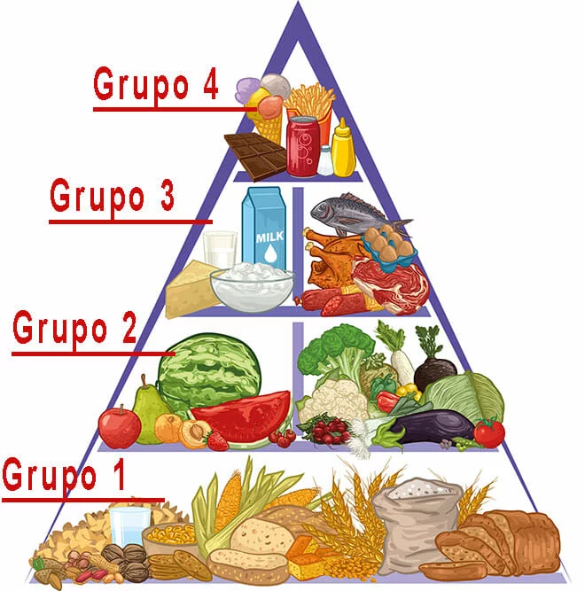

Equipe Healthy Life
O que é A pirâmide alimentar é uma representação gráfica de grupos alimentares onde as pessoas em boas condições de saúde e acima de 2 anos podem se basear para que possam seguir uma alimentação saudável. Para que serve a pirâmide alimentar A pirâmide dos alimentos orienta como deve ser a alimentação no dia a dia para que seja a mais saudável possível. Ela orienta, especificamente, sobre a qualidade da alimentação, indicando quais os alimentos, dentro dos grupos alimentares, devem ser consumidos e a quantidade que devem ser ingeridos, baseado em uma dieta de 2000 kcal por dia. Divisão dos grupos alimentares A pirâmide alimentar é dividida em 4 grandes grupos alimentares. Cada grupo possui nutrientes que exercem uma função específica no corpo e recomenda a quantidade dos alimentos que deve ser consumida diariamente baseada no número de porções. A pirâmide divide os grupos alimentares em andares ou níveis onde a base é composta pelos carboidratos que são os alimentos que devem ser ingeridos em maior quantidade e o topo são os alimentos que devem ser ingeridos em menor quantidade. 1. Grupo dos alimentos energéticos É formado por alimentos ricos em carboidratos como arroz, pães, massas, raízes e tubérculos. Devem ser consumidos, em média, na quantidade de 6 porções por dia. Com isso, esses alimentos são consumidos nas 6 refeições diárias (café da manhã almoço, jantar e lanches). Cada porção dos carboidratos contém 150 kcal. Os carboidratos são a base da pirâmide alimentar, pois são os alimentos que fornecem energia. O TEXTO CONTINUA APÓS ESSA PUBLICIDADE! Por isso, o tipo de carboidrato que deve ser priorizado é o complexo, pois é rico em fibras que proporcionam vários benefícios à saúde. 2. Grupo dos alimentos reguladores Esse grupo é classificado como reguladores porque os alimentos que o compõem são ricos em vitaminas, minerais e fibras. É composto pelas frutas, verduras e legumes. Cada porção das frutas fornece, em média, 70 kcal e as verduras e legumes fornecem 15 kcal cada porção. 3. Grupo dos alimentos construtores Os alimentos construtores são os ricos em proteínas tanto de origem animal encontradas no leite e derivados, nas carnes e nos ovos, quanto de origem vegetal, presente nas leguminosas. O leite e seus derivados fornecem 120 kcal em cada porção e é recomendado que sejam ingeridos em 3 porções diárias. As carnes e ovos fornecem 190 kcal por porção e recomenda-se o consumo de 1 porção diária. Por último, as leguminosas possuem 55 kcal por porção e a recomendação de consumo é de 1 porção por dia. 4. Grupo dos alimentos energéticos extras (evitar excessos) É o grupo formado pelos alimentos ricos em gorduras e açúcares. As gorduras e as os açúcares devem ser consumidos em até 1 porção por dia e fornecem 73 kcal e 110 kcal, respectivamente. Leia também: Comida Fitness – 31 Receitas para um Cardápio Completo Marmita Fitness – Algumas ideias e dicas com CARDÁPIO SEMANAL! Dieta – Lista de alimentos saudáveis para comprar no mercado Modelo brasileiro da pirâmide alimentar Existem vários modelos de pirâmide alimentar em todo o mundo que são adaptados de acordo com a região e as particularidades da alimentação e da população local. A primeira pirâmide alimentar brasileira adotada foi baseada no modelo original criada pelo Departamento de Agricultura dos Estados Unidos e foi elaborada pela pesquisadora Sônia Tucunduva Phillipi, do Departamento de Nutrição da Faculdade de Saúde Pública da Universidade de São Paulo (USP), no ano de 1999. Essa pirâmide levou em conta os hábitos alimentares dos brasileiros. Com o passar dos anos, mudanças nos hábitos de vida, incluindo os hábitos alimentares da população, foram ocorrendo com que houvesse um aumento significativo de doenças como: obesidade, diabetes, hipertensão, dislipidemias, doenças cardiovasculares, entre outras. Com isso, a pirâmide foi novamente adaptada a essa nova realidade para ajudar a prevenir o aparecimento e o aumento dessas doenças relacionadas à alimentação. Além da alimentação, o modelo mais recente da pirâmide alimentar brasileira incentiva a prática de atividade física regular e orienta sobre o número de refeições que um indivíduo deve fazer por dia. Dessa forma, é possível manter um estilo de vida que beneficie a saúde, mantendo o corpo nutrido, dentro do peso ideal e evitando o aparecimento de doenças. Como se basear pela pirâmide alimentar Como vimos, os alimentos que compõem cada grupo alimentar possui uma média da quantidade de porções que a população deve ingerir por dia. Porém, a quantidade correta de porções que cada indivíduo deve ingerir vai depender da necessidade energética diária estimada baseada em informações pessoais como idade, altura, sexo, atividade física, peso e índice de massa corporal (IMC), necessidade essa que é calculada pelo profissional nutricionista. A ingestão de todos os grupos alimentares de acordo com a sua necessidade energética garante a ingestão de todos os nutrientes dos quais o organismo necessita. Mas é importante estar atento à qualidade dos alimentos ingeridos. Carboidratos Como vimos, os carboidratos priorizados são os complexos no lugar dos refinados. Os carboidratos refinados são pobres em nutrientes e fornecem apenas calorias promovendo o aumento de peso. Em contrapartida, os carboidratos complexos como as massas e os cereais integrais fornecem nutrientes como as fibras que ajudam a regular o intestino e a manter os níveis de glicose e colesterol controlados. Além disso, as fibras são os nutrientes mais importantes no controle do peso. Leia também => Carboidratos: O que são, funções, tipos e alimentos ricos para dieta Frutas e verduras As frutas, verduras e legumes priorizados são os orgânicos, pois são livres de produtos químicos como os agrotóxicos que intoxicam o organismo e o deixa predisposto ao aparecimento de doenças, prejudicando, assim, a saúde. Esses alimentos deve ser consumidos com casca, sementes, bagaço e talos, pois, dessa forma, são totalmente aproveitados e a oferta de nutrientes é maior, principalmente das fibras. Leites e derivados Os leites e derivados priorizados devem ser os pobres em gorduras como leite e iogurtes desnatados e queijos brancos como cottage, ricota e minas frescal. Esses alimentos ajudam a evitar o aumento das taxas de colesterol e a prevenir o aparecimento de doenças cardiovasculares. Carnes As carnes consumidas devem ser as magras como carne vermelha magra, aves, peixes e demais frutos do mar. Devem ser consumidas, de preferência, assadas, grelhadas ou cozidas com pouco óleo. Além disso, os ovos devem ser preparados também preferencialmente de forma cozida. Leia também => 20 alimentos ricos em proteínas para quem quer ganhar massa muscular Óleos e açúcares Os óleos refinados como óleo de soja e as gorduras saturadas como manteiga, banha, etc. Bem como os doces e açúcares refinados não devem fazer parte da alimentação diária, visto que são alimentos ricos em calorias e contribuem para o aumento de peso e o aparecimento de doenças, principalmente as doenças cardiovasculares e a diabetes tipo 2, respectivamente. Ao optar pelo consumo de óleos e gorduras prefira os óleos extravirgem como o azeite de oliva e o óleo de coco, pois, apesar de fornecerem calorias, fornecem nutrientes essenciais ao organismo. Os açúcares devem ser preferencialmente os que não sejam refinados como o mascavo e o açúcar orgânico ou adoçantes naturais como estévia e mel. Esses alimentos podem ser consumidos na quantidade de 1 porção por dia cada. Com isso, seguir as recomendações da pirâmide alimentar é um passo fundamental para que você consiga ter uma alimentação mais saudável aliada à pratica de atividade física regular e, assim, possa ter mais qualidade de vida. |